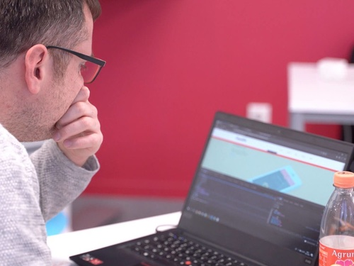
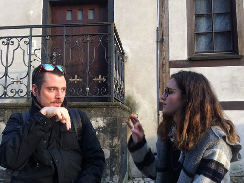
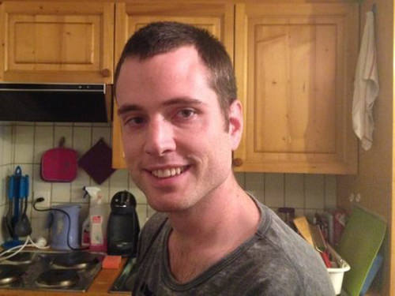

Propos de Nicola Bramaz
Mon intérêt pour le monde de l'informatique a émergé grâce à M. Maurice Mayor, directeur de l’école pour enfants sourds à Lausanne. Un matin, alors que je jouais avec des amis en tant qu'enfant, j'ai remarqué qu'il travaillait souvent avec un ordinateur portable. Curieux, je suis allé voir ce qu'il faisait et lui ai demandé : « C’est quoi ça ? » Il m’a expliqué qu'il s’agissait d’un portable Apple, offrant la possibilité de travailler sur des textes, de jouer à des jeux de stratégie, etc. (un Apple PowerBook 150). Ce fut un véritable coup de foudre pour moi, et ce soir-là, j'ai demandé à mes parents si je pouvais avoir un ordinateur Apple. Bien qu'ils aient refusé, des années plus tard, j'ai finalement pu en obtenir un et ma curiosité pour le domaine d'informatique s'est intensifiée.
Au fil des ans, j'ai suivi plusieurs formations dans le domaine du web, du design, du montage vidéo, ainsi qu'une formation de formateur, afin de pouvoir transmettre mes connaissances en informatique. En 2018, j’ai poursuivi une année de formation à l’étranger, afin de rendre les cours accessibles en langue des signes et d’obtenir un certificat de WebDesigner. Mon parcours professionnel s’est ensuite poursuivi en Suisse, où j’ai acquis une solide expérience dans le multimédia web en collaborant avec des entreprises interculturelles et des associations.
Cette expérience m’a permis de perfectionner mes compétences en graphisme web avec Figma, ainsi qu'en montage vidéo et photographie. Toujours animé par une passion constante pour l’apprentissage, je cherche à explorer de nouvelles disciplines pour enrichir mon expertise. Dynamique et engagé, je suis prêt à relever de nouveaux défis professionnels et à mettre mes compétences au service de projets ambitieux.
Comprétences en résumé
WebDesigner
Analyser vos objectifs pour votre projet de site et concevoir ensuite le design visuel, en intégrant une approche UX/UI
Développement
Développer des sites statiques simplifiés avec HTML & CSS, ainsi que des sites dynamiques sur des plateformes no-code comme WIX.
Système de gestion de contenu
Développer des sites dynamiques avec WordPress, incluant la gestion des plugins, ainsi que la maintenance régulière pour assurer la sécurité et la performance du site.
Accompagnement
Accompagner le projet en fonction de vos besoins, depuis la phase de préparation, pendant le développement, jusqu'à la mise en production du site.
Habbies
Litterature
Technologies interactive
Photogaphie
Activités en plein air
Exploration
Ma carrière
J'ai bénéficie ma parcours dans la domaine du numérique que j'ai pu apprendre les activités professionnels.
-
WebDesginer 2024Je mène des projets de design et développe des sites web en appliquant les exercices proposés par Emploi Lausanne.
-
UX / UI Développer 2022 - 2023Je poursuis un travail des projets internes de la banque pour le développement de la visuel aux sites internes de la banque genevoise.
-
Support SharePoint 2022Je poursuivais un travail en tant que supporteur de SharePoint pour les collaborateurs de la banque genevoise pour développer les sites de la collaboration d'entreprise.
-
Adaflow 2021Je poursuivais la formation qui est organisée par l'association lausannoise Powerhouse qui propose le programme d'Ada:Flow pour l'apprentissage de Wordpress et celle que les logiciels sous le système SAAS.
-
Apprenti WebDesigner 2018 - 2019Je poursuivais la formation qui est organsiée par l'entreprise Signes et Formations au Campus Région du Numérique à Lyon avec le stage chez une entreprise 1DLab à Saint-Etienne. J'ai bénéficié un certificat non connu en France et l'attestation GEN.
-
Développeur bénévolat 2016 - 2017Je travaillais pour l'association C'est un signe à Villars-sur-Glâne sur les activités à suivre : les sites sous Wordpress, les sites statiques avec les supplémentaires (Photographie et Vidéaste), et celle que le site de la boutique qui vend actuellement leurs livres liés à la langue des signes et à la culture des sourds en ligne.
-
Multimédia & Web 2007Frima Formations à Fribourg est un programme d'emploi temporaire (mesure du marché du travail MMT) réservé aux demandeurs d'emplois inscris auprès d'un ORP. J'ai bénéficié une formation automne qui offre les logiciels ADOBE, la création du site web avec la base de HTML et CSS et celle que CMS Joomla.
-
Apprenti Formateur 2017Je poursuivais la formation pour devenir un Formateur des adultes FSEA FFA BF-M1 par Flying Teachers à Zurich est l'enseignement spécialisé des langues qui propose des cours de langue ainsi que des formations du formateur ou enseignant.
-
Intégrateur Web 2014 - 2016J'ai travaillé dans une entreprise fribourgoise qui est spécialisée dans la création de sites internet TYPO3 et dans le référencement. Mon but d'accompagnement de la création du site sous TYPO3 et construire le site statique.
-
Webmaster 2010-2011J'ai travaillé pour un freelance valaisan qui est un objectif de captiver vos internautes avec la beauté du graphisme et la pertinence d'une communication ciblée avec les projets réalisées du graphisme en impression poru aux clients et les créations du site sous Joomla pour aux clients.
-
Éditeur video 2009J'ai participé la formation par l'ancienne association VIDEO SOURDS ROMANDS qui n'existe plus aujourd'hui. Il était reconnu par la RTS - Radio télévision suisse. Après cette formation, je me rejoignais l'équipe pour la production du tournage et le montage vidéo.
Portfolio
Découvrez mes projets en cliquant sur l'une des images. Chaque clic vous redirigera automatiquement vers la page dédiée au projet correspondant.
Derniers articles

9 septembre 2019
Mon expérence de la formation à l'étranger
Ce métier de WebDesigner est à la fois positif et négatif du point de vue des sourds et les malentendants. Je commence par un point positif.
Lire la suite

28 mars 2017
Parle-moi de ta cause!
Nicola Bramaz, sourd de naissance, est vice-président de l’association fribourgeoise C’est un signe. Celle-ci promeut l’échange entre sourds et entendants…
Lire la suite

5 septembre 2014
Fribourg, une ville accessible à tous?
Nicola Bramaz, 27 ans, technicien en informatique et sourd «Pour les personnes sourdes, c’est la communication qui est délicate.
Lire la suite